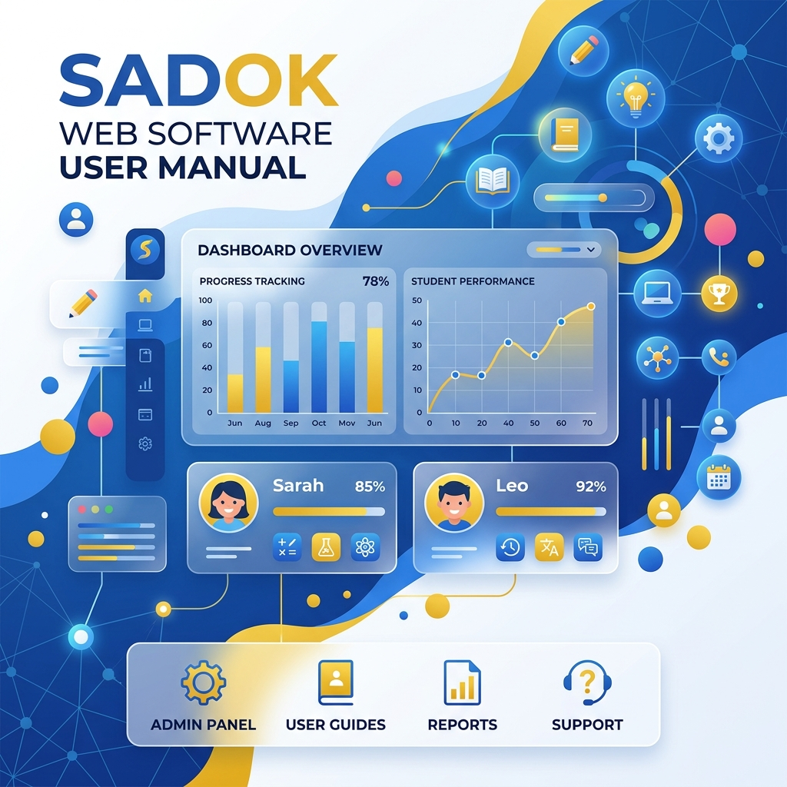

SADOK PRO: Повний посібник

Ласкаво просимо до повного керівництва користувача системи управління закладом дошкільної освіти (ЗДО) SADOK PRO. Цей документ допоможе вам швидко опанувати всі можливості програми — від ведення карток дітей до складського обліку продуктів харчування та автоматичного формування звітності.
2. Панель керування (Дашборд)
Дашборд — це ваш головний екран, який відображає поточний стан закладу в реальному часі:
- Метрики дня: Загальна кількість дітей, кількість присутніх вихованців на сьогодні, поточний стан складу.
- Аналітика витрат: Графік денних витрат на меню за тиждень та діаграма «Топ продуктів» за сумою списання.
- Сповіщення про безпеку: Розумне попередження про резервне копіювання. Якщо останній бекап бази даних був створений більше 2-х днів тому, система покаже яскравий помаранчевий банер із нагадуванням створити резервну копію.
3. Розділ «Діти та групи» (Особові справи)
Цей розділ призначений для детального обліку груп, вихованців ЗДО, а також швидкої навігації за статусами навчання.
3.1. Швидкі фільтри статусів
Ви можете легко перемикати відображення дітей у таблиці:
- Навчаються — тільки активні діти (основний список).
- Вибули / Архів — вихованці, які випустилися із садка або перейшли в інші заклади (із зазначенням дати та причини вибуття).
- Всі — загальний реєстр.
3.2. Внутрішня структура особової справи
При натисканні на ім'я вихованця відкривається детальна модальна картка, яка містить чотири функціональні вкладки:
- Вкладка 1: Загальне: Завантаження офіційного портрета дитини, внесення ПІБ, дати народження, статі, групи та приміток.
- Вкладка 2: Родина та документи: Контактні дані матері та батька, адреса проживання, свідоцтво про народження та пільгова категорія.
- Вкладка 3: Медична інтеграція: Група крові, резус-фактор, алергії, дієтичні обмеження, щеплення та вимірювання зросту/ваги.
- Вкладка 4: Персональний QR-код та Друк: Перегляд QR-коду дитини для автоматичного обліку відвідуваності та друк красивого бейджа дитини для носіння.
5. Склад продуктів та FIFO-списання
Складський облік у SADOK PRO працює за строгими правилами бухгалтерського обліку:
- FIFO (First In, First Out): Продукти списуються за партіями в порядку їх надходження на склад (найперші за часом приходу).
- Контроль нестачі: При спробі підтвердити меню, на яке не вистачає продуктів, система заблокує операцію та детально покаже вікно зі списком відсутніх продуктів і точним обсягом нестачі. Прямо з цього вікна можна створити швидку прихідну накладну.
6. Медкабінет, Комунальні послуги та Майно
6.1. Медкабінет
Ведення медичних карток дітей, детальний облік щеплень та перенесених інфекційних захворювань. Також реалізовано контроль термінів придатності медикаментів в аптечці ЗДО.
6.2. Комунальні послуги
Облік лічильників (вода, електроенергія, газ, тепло) за локаціями з веденням історії показань та автоматичним розрахунком сум до оплати за тарифами.
6.3. Майно садка (ТМЦ)
Загальний реєстр матеріальних цінностей (меблі, техніка, ігрові майданчики, дерева на території садка). Можливість швидкого переміщення майна (передачі відповідальності) між співробітниками.
7. Система резервного копіювання (Автобекапи)
Для забезпечення цілісності даних у SADOK PRO реалізовано автоматичну систему резервного копіювання:
.sqlite.gz, що економить до 90% місця на диску. Налаштувати час щоденного бекапу та ліміт зберігання файлів можна у вкладці налаштувань.
8. Активація програми та ліцензування
SADOK PRO постачається з вбудованим генератором апаратних ліцензійних ключів на основі унікального ідентифікатора заліза (HWID):
- Генерація запиту: Програма зчитує апаратний UUID комп'ютера та генерує 16-значний код запиту активації.
- Типи ліцензій: Демо (14 днів), Місячна, Квартальна, Піврічна, Річна та Пожиттєва (Lifetime).